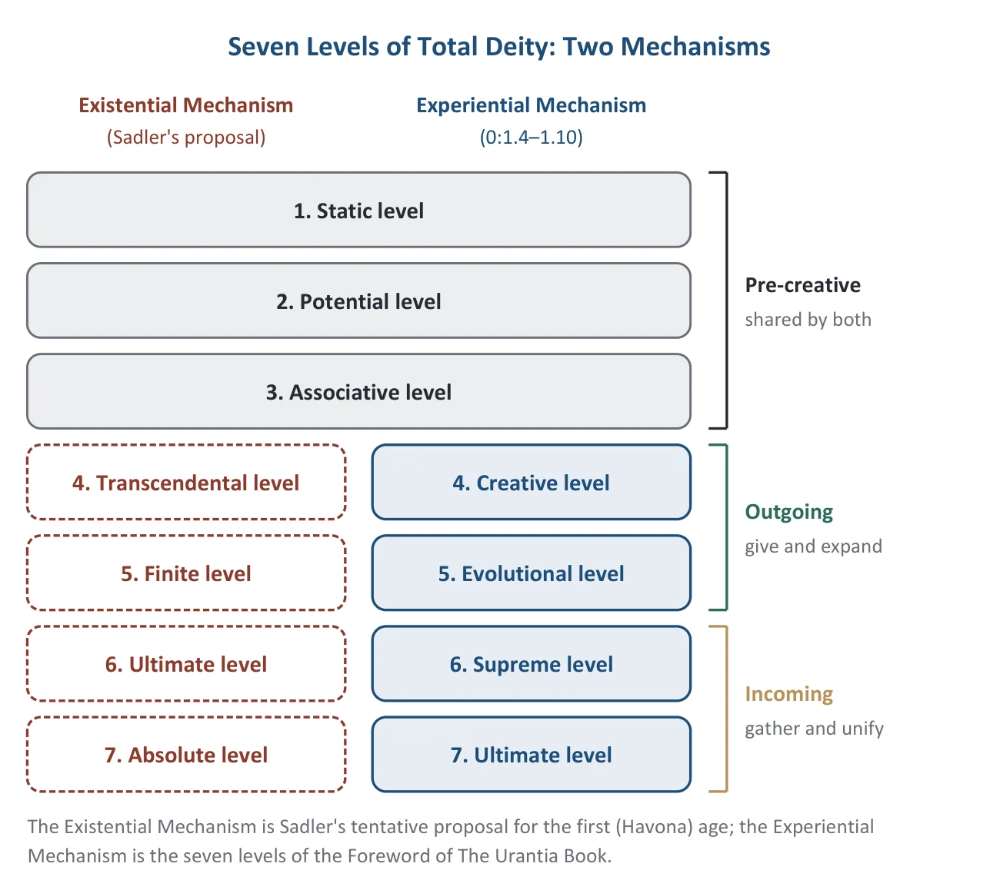

Original : Annexe VI, La Déité totale dans les âges de l’univers (pp. 221–233)
L’Annexe V traitait du rôle de pionnier de la Déité Duelle ; l’Annexe VI suit à travers les âges la fonction consolidatrice de la Déité totale. Sadler regroupe les sept niveaux de 0:1.3–1.10 en trois groupes — niveaux précréatifs, niveaux sortants et niveaux rentrants — et constate que ce schéma convient bien à l’éternité passée et à l’âge présent, mais qu’il achoppe devant Havona. Comme remède, il propose à titre provisoire un autre ensemble de sept niveaux adapté à l’âge de Havona, qu’il appelle le Mécanisme existentiel.
L’Introduction du Livre d’Urantia dit que la Déité totale fonctionne sur sept niveaux.
La Déité fonctionne sur les niveaux personnel, prépersonnel et superpersonnel. La Déité totale est fonctionnelle sur les sept niveaux suivants :0:1.3
Les niveaux sont nommés statique, potentiel, associatif, créatif, évolutionnaire, suprême et enfin ultime. Sadler considère que cet ordre a un sens et le divise en trois groupes.
L’image de la respiration peut aider. Si les niveaux précréatifs sont la pause qui précède le souffle, les niveaux sortants sont l’expiration et les niveaux rentrants l’inspiration. Dieu l’Ultime opère « sur les niveaux créatifs finals de réalité de Déité » [0:2.17], de sorte que ce qui se trouve au-delà serait un niveau supercréatif — précisément le mot que le texte applique à Dieu l’Absolu [0:2.18].
Sadler refait dans ce cadre le chemin de l’Annexe I. Le stade Avant le Pré-Zéro, instant statique hypothétique sans même de potentiel, correspond au niveau statique. Au stade Pré-Zéro, l’Absolu de Déité et l’Absolu Non Qualifié se séparent et le niveau potentiel apparait, tandis que l’activité de l’Absolu Universel, qui maintient les deux ensemble, est la première forme du niveau associatif. Dans l’Âge Zéro, ce niveau devient personnel par l’association du Père et du Fils, et, dans le premier âge, il s’achève quand l’Esprit Infini apparait et que la Trinité du Paradis se forme. Jusqu’ici, tout va bien. La difficulté, c’est Havona.
Havona semble être un univers parfait créé par la Trinité, et pourtant le texte dit que ses natifs n’ont jamais été créés. Le texte lui-même présente Havona comme la meilleure illustration du paradoxe.
mais Havona lui-même n’est pas un transcendantal — il est Havona.105:7.2
Sadler propose de considérer la création de Havona comme un acte dans l’éternité, en fait un évènement précréatif. Deux perspectives sur Havona apparaissent alors : le Havona précréatif du premier âge, quand rien n’existait en dehors de lui, et le Havona postcréatif du deuxième âge, qui est entré en relation avec les superunivers et a reçu le Suprême et l’Ultime ainsi que des ordres plus récents tels que les Esprits des Circuits et les supernaphins secondaires. Dans son fonctionnement, le Havona actuel se comporte exactement comme un univers modèle créé.
Un problème plus profond demeure. Dans le premier âge, rien n’a été créé et Havona n’a pas évolué, de sorte que les niveaux créatif et évolutionnaire restaient en sommeil. Pourtant, le texte dit que le Havona originel contenait déjà des maximas finis, des êtres transcendantaux et des significations ultimes [106:0.4–6], et la vie dans Havona s’étend du matériel à l’absolu [14:4.2–8]. La Trinité du Paradis du premier âge fonctionnait donc déjà sur des niveaux subabsolus — des niveaux qui ne sont pas les mêmes que ceux que nous appelons maintenant les niveaux suprême et ultime. À ce point, le schéma des sept niveaux s’effondre.
La solution de Sadler consiste à changer la question. Nous appliquons peut-être un étalon expérientiel à une situation existentielle. Les sept niveaux ne sont peut-être pas un cadre valable pour tous les âges, mais simplement le cadre de l’âge présent. Le texte lui-même donne un tel avertissement :
Il y a bien d’autres manières de voir la réalité selon une perspective autre-que-mortelle et du point de vue d’âges d’univers différents.106:0.10
Dieu, ayant le libre arbitre, peut modifier les manifestations de son absoluité [4:4.2], et la Trinité du Paradis est en relation avec le fini en tant que Trinité de Suprématie et avec l’absonite en tant que Trinité de l’Ultimité [10:5.4–5]. Rien n’empêche donc que la Trinité ait placé dès le commencement une réalité subabsolue dans l’éternel Havona. Sur cette base, Sadler expose à titre provisoire sept niveaux d’un Mécanisme existentiel adapté au premier âge.

Les trois premiers niveaux sont les mêmes ; la différence commence avec le quatrième. Le Mécanisme existentiel de Sadler se poursuit avec les niveaux transcendantal, fini, ultime et absolu, et il donne les raisons de cet ordre. Selon le texte, « du point de vue de l’éternité », le transcendantal est « une anticipation du fini » [105:7.1] ; il précède donc le fini. Dans la série du texte ultime, coabsolu et absolu, l’ultime vient avant l’absolu. Le coabsolu, étant une projection des expérientiels [106:0.7], disparait d’un premier âge qui ne connaissait pas l’expérience. Le niveau fini tombe alors à la cinquième place restante.
Sadler souligne que le niveau fini du Mécanisme existentiel diffère du fini de l’âge présent. Le texte distingue le parfait du rendu parfait.
1. Les maxima primaires, la réalité suprêmement parfaite, le type havonien d’univers et de créatures.105:5.7
Les habitants de Havona sont des maximas primaires, issus du cinquième niveau du Mécanisme existentiel ; les ascendeurs des superunivers rendus parfaits sont des maximas secondaires, issus du cinquième niveau du Mécanisme expérientiel, le niveau évolutionnaire. Tous deux sont finis, mais l’un est parfait dès le départ et l’autre devient parfait par la croissance. En venant aux maximas tertiaires qui résultent de relations de trinitisation entre les deux [105:5.10], Sadler ajoute qu’il pourrait y avoir encore une autre manière de considérer les niveaux.
Dans les âges post-Havona, la Déité expérientielle agit à côté de la Déité existentielle. Le texte ne dit jamais que la Déité expérientielle fonctionne sur le niveau statique, mais elle semble fonctionner sur les six autres. Qu’une Déité fonctionne sur le niveau évolutionnaire est difficile à se représenter ; Sadler désigne l’Ajusteur de Pensée. « Bien qu’il conserve tout le caractère de la nature existentielle divine » [107:2.7], l’Ajusteur habite un être humain, prend part aux évènements du niveau évolutionnaire et acquiert lui-même de l’expérience.
La création, dans le deuxième âge, avance sous deux impulsions. La première vient du Paradis-Havona, qui a envoyé les Anciens des Jours ainsi que les Fils et les Esprits d’Univers ; la seconde vient des efforts de ces créateurs dans le temps et l’espace. Le niveau évolutionnaire se manifeste le plus pleinement dans les univers locaux, où même les Créateurs évoluent [116:4.8], et l’arrivée de Grandfanda a porté le processus évolutionnaire jusque dans la création centrale parfaite elle-même.
Le texte parle d’une « zone d’espace comparativement calme » entre des niveaux d’espace voisins [12:1.14]. Sadler conjecture qu’il pourrait y avoir de même un temps de quiétude entre les âges, et le fascicule 117 laisse entrevoir cette possibilité :
Peut-être y aura-t-il un intervalle de repos, de détente, à la fin de la lutte multimillénaire pour la perfection évolutionnaire, mais pas pour longtemps !117:7.17
Sadler s’attend à ce que, pendant ce temps de quiétude, l’Être Suprême pleinement émergé fonctionne complètement sur le niveau suprême de la Déité totale et entre en relations personnelles avec les trois Déités du Paradis. Toute imprévisibilité qui subsistera alors signalera la présence de l’Ultime et des Absolus.
Dans les quatre âges de l’espace extérieur, il devient difficile d’ajuster les niveaux créatif et évolutionnaire à l’activité transcendantale. Le texte dit que les Transcendantaux ne créent pas et n’ont pas été créés ; il préfère dire « simplement que les Transcendantaux s’extériorisent » [31:8.3].
En tant que superpersonne, Dieu extériorise. En tant que personne, Dieu crée.30:1.99
Sadler propose donc d’élargir le sens du niveau créatif pour y inclure l’extériorisation, et d’élargir le niveau évolutionnaire pour y inclure une croissance qui est superévolutionnelle sans être dépourvue d’expérience — une croissance dans le temps transcendé. Dans sa vision, ces niveaux sortants élargis atteignent l’espace extérieur, où la première Trinité expérientielle, Dieu le Septuple élargi, la troisième fonction du Suprême, l’Ultime en émergence et la Trinité de l’Ultimité agissent tous ensemble. Quand le maitre univers sera achevé et qu’un autre temps de quiétude arrivera, l’Ultime Trinité atteindra son unification finale, Dieu l’Ultime émergera pleinement, et le septième niveau, le niveau ultime, sera complet.
Au-delà du niveau ultime, la pensée sort du maitre univers. Puisque l’Ultime opère sur les « niveaux créatifs finals », tout acte de transformation au-delà de lui est supercréatif. Si l’expérience est projetée au-delà du maitre univers, c’est le niveau que le texte appelle coabsolu. Sadler prévoit dans ce domaine trois nouvelles réalités de Déité — la deuxième Trinité expérientielle, Dieu l’Absolu dans une expression trinitisée et la Trinité des Trinités — et s’attend à ce qu’elles opèrent selon un Mécanisme existentiel-expérientiel entièrement différent. Le Mécanisme existentiel du premier âge, le Mécanisme expérientiel du présent et de l’avenir proche, et le Mécanisme existentiel-expérientiel au-delà de l’ultime : c’est dans ces trois mécanismes que Sadler résume son histoire de la Déité totale.
Le mérite de cette annexe est que Sadler ne cache pas où son cadre échoue ; au contraire, s’appuyant sur le rappel du texte lui-même concernant le point de vue « d’âges d’univers différents », il reconstruit le cadre lui-même. Les sept niveaux du Mécanisme existentiel sont toutefois une proposition de Sadler et ne figurent pas dans le Livre d’Urantia, et lui-même ne les présente qu’à titre provisoire. Parmi les références de l’original, 30:1.99 est correcte telle qu’imprimée, tandis que 0:3.18 doit se lire 0:2.18.